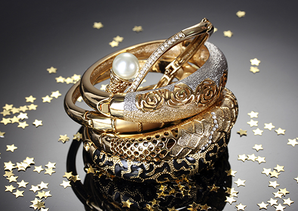

Золото — материал практически вечный. Тем не менее, даже золотым ювелирным изделиям время от времени требуется чистка. В процессе носки на них неизбежно попадают жир, пот, омертвевшие клетки кожи, пыль и грязь. Чтобы золото не тускнело, требуется регулярная чистка ювелирных изделий. Народные средства не всегда дают нужный эффект, а порой просто вредят. Например, от применения зубного порошка могут возникнуть микроцарапины, которые приведут к еще большему потускнению.
Серебро может тускнеть под воздействием некоторых косметических средств, повышенной влажности и веществ, содержащих серу. Чистка ювелирных изделий из серебра может требоваться некоторым людям довольно часто из-за особенностей обмена веществ в коже.
Особенно деликатного ухода требуют позолоченные и посеребренные вещи. Чистка ювелирных изделий подобного рода в домашних условиях может закончиться стиранием слоя драгоценного металла и серьезной потерей внешнего вида. Некоторые драгоценные и полудрагоценные камни могут пострадать из-за использования растворителей, и даже воды.
Для того чтобы Ваше любимое украшение обрело первозданный внешний вид, лучше обратиться к специалистам. Одна из услуг нашей мастерской — профессиональная чистка ювелирных изделий. С одними видами загрязнений отлично справится ультразвук, с другими химические и электрохимические методы. В некоторых случаях блеск изделию вернет полировка с применением специальных средств.
Не стоит забывать, что украшениям необходим надлежащий уход. Чистка ювелирных изделий потребуется вновь не так скоро, если воспользоваться специальными средствами для их защиты. Ювелирную косметику Вы можете приобрести в нашей ювелирной мастерской.